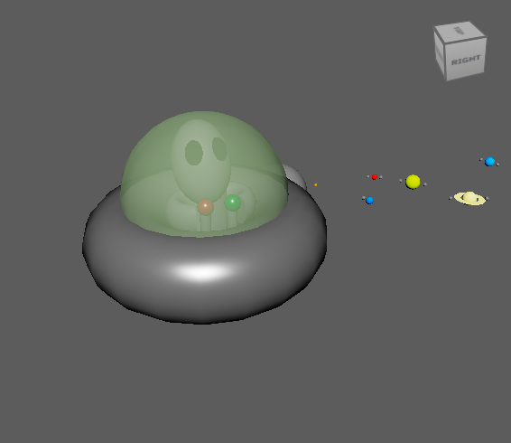

Part 1: Solar System
This nature documentary follows the sun, earth, and all the planets in their natural environment: outer space!
Part 2: Martians New Home
A thrilling sequel to the critically acclaimed "Solar System", the Martian is on a search for a new home!
Changes:

|

(Planet Pixel Emporium, Wikimedia) |

|